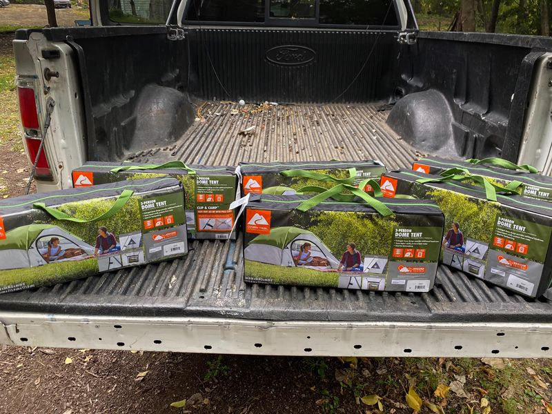

Mobile uploads
No matter what your thoughts are of me, you have to admit that no one has more experience sheltering homeless people in tents in Akron Ohio than me. I’ve done it for years.
When I first started this I thought that the winter months were going to be very quiet. That people would somehow figure out a place to sleep inside. I WAS WRONG.
Winter is the busiest time.
People that walked the streets all night or slept in a corner of an alley, now need real shelter. I never give away more tents than in the winter.
I bought these for specific people that came to me for tents yesterday.